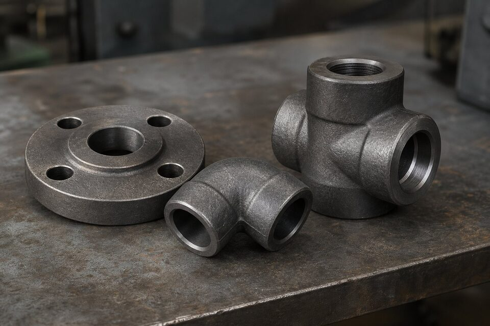

جایگاه استاندارد مواد فورج کربنی
استاندارد مواد فورج کربنی، مشخصه قطعات فورج شده از جنس فولاد کربنی برای استفاده در دمای محیط و دماهای بالاتر را تعریف میکند؛ از جمله فلنجها، فیتینگها، بدنه شیرآلات و قطعات فورج شده تحت فشار. این متریال با عنوان تجاری فورج کربنی شناخته میشود و پرکاربردترین انتخاب برای فلنجهای کربنی خطوط فرایندی است.

ترکیب شیمیایی و خواص مکانیکی
فورج کربنی یک فولاد کربنی-منگنزی است که محدوده ترکیب شیمیایی آن در استاندارد محدود شده است: کربن حداکثر ۰٫۳۵ درصد، منگنز ۰٫۶ تا ۱٫۰۵ درصد، و مقادیر محدود برای سیلیسیم، گوگرد و فسفر. خواص مکانیکی حداقلی شامل:
| خاصیت | مقدار حداقلی |
|---|---|
| استحکام کششی | ۴۸۵ مگاپاسکال |
| حد تسلیم | ۲۵۰ مگاپاسکال |
| ازدیاد طول | مطابق جدول استاندارد |
| سختی | حداکثر ۱۸۷ برینل |
مقادیر واقعی هر ذوب در گواهی مواد درج میشود و مبنای پذیرش بازرسی است.
نرمالایز و عملیات حرارتی
قطعات فورج ممکن است در وضعیت فورج یا پس از عملیات حرارتی عرضه شوند. نرمالایز شامل گرم کردن تا دمای آستنیته و سرد کردن در هوای آرام است و مزایای آن عبارتند از:
- ریز شدن دانهها و یکنواختی ریزساختار.
- افزایش چقرمگی و مقاومت در برابر شکست ترد.
- کاهش تنشهای پسماند ناشی از فورج.
- عملکرد بهتر در تست ضربه برای سرویسهای مرزی.
مقایسه با متریالهای جایگزین
| متریال | کاربرد اصلی | نقطه تمایز |
|---|---|---|
| فورج کربنی | خطوط فرایندی دمای محیط و بالا | اقتصادیترین انتخاب عمومی |
| فورج دمای پایین | سرویسهای زیر صفر | الزام تست ضربه در دمای طراحی |
| فورج استنلس ۳۰۴/۳۱۶ | سرویس خورنده | مقاومت به خوردگی بالاتر، هزینه بیشتر |
| فورج آلیاژی | دمای بالا و فشار قوی | حفظ خواص در دمای کاری بالا |
انتخاب متریال باید بر اساس دمای طراحی، فشار و ماهیت سیال انجام شود.
چکلیست استعلام خرید فورج
- نوع قطعه (فلنج، فیتینگ، بدنه شیر) و استاندارد ابعادی مربوطه.
- کلاس فشاری و سایز.
- وضعیت عملیات حرارتی (فورج یا نرمالایز).
- در صورت سرویس دمای پایین، دمای طراحی و الزام تست ضربه.
- گواهی مواد نوع ۳٫۱ با شماره ذوب و حک روی قطعه.
- پوشش حفاظتی و بستهبندی حمل.
ردیابی و بازرسی قطعات فورج
قطعات فورج کربنی مانند فلنجها و اتصالات، اقلامی هستند که کیفیت آنها عمدتا از طریق مدارک و بازرسیهای نقطهای تایید میشود، نه آزمون روی تکتک محصولات؛ به همین دلیل نظام ردیابی و بازرسی در آنها جایگاه ویژهای دارد. گواهی متریال باید مشخصه ذوب، ترکیب شیمیایی، خواص مکانیکی و وضعیت عملیات حرارتی را پوشش دهد و این مشخصه باید روی قطعه حک یا مهر شده باشد. در بازرسی ورودی، علاوه بر تطابق نشانهگذاری با مدارک، کنترل ابعادی نمونهها و بررسی سطح از نظر عیوبی مانند ترک، تخلخل و پلیسههای باقیمانده انجام میشود. برای اقلام حساس یا سفارشهای بزرگ، بازرسی حین ساخت در کارخانه سازنده ارزش بالایی دارد: مشاهده فرایند فورج، کنترل دمای عملیات حرارتی و حضور در آزمونهای مکانیکی نمونهها، سطح اطمینان را به شکل قابل توجهی بالا میبرد. یکی از نکات ظریف، تشخیص تفاوت ظاهری فورج با قطعات ساختهشده از ورق یا ریختگی است؛ در برخی کاربردها، قطعات غیرفورج با قیمت پایینتر عرضه میشوند و تنها با بازرسی دقیق یا آزمونهای تکمیلی قابل تشخیصاند. در سفارش، ذکر صریح روش ساخت فورج و درخواست گواهی در سطح موردنیاز، اولین خط دفاعی خریدار است و در بازرسی ورودی نیز کنترل ساختار در صورت وجود تردید، قابل درخواست است.
در سفارشهای ترکیبی که اقلام فورج با اقلام ریختگی یا ساختهشده از ورق همزمان خریداری میشوند، تفکیک روش ساخت در مدارک و نشانهگذاری را صریح کنید؛ اختلاط روشهای ساخت در یک خط، یکی از عدم انطباقهای رایج در بازرسیهاست.
جمعبندی
فورج کربنی انتخاب پیشفرض و اقتصادی برای فلنج و فیتینگ خطوط فرایندی است؛ به شرطی که عملیات حرارتی، گواهی مواد و ردیابی ذوب آن شفاف باشد. در سرویسهای زیر صفر یا خورنده، متریال مناسبتر را جایگزین کنید.
سوالات رایج
گرید نرمالایز شده چیست و چرا استفاده میشود؟
نرمالایز یک عملیات حرارتی است که ریزساختار را یکنواخت و دانهها را ریزتر میکند و چقرمگی و قابلیت اطمینان را افزایش میدهد. در سرویسهای حساس یا دمای پایین، گرید نرمالایز شده ترجیح داده میشود و باید در سفارش صریحاً درخواست شود.
آیا فورج کربنی برای سرویس زیر صفر مناسب است؟
بدون الزامات تست ضربه خیر؛ برای سرویسهای زیر صفر باید از فورج کربنی مخصوص دمای پایین با تست ضربه در دمای طراحی استفاده کرد. ذکر دمای طراحی در استعلام الزامی است.
خواص مکانیکی حداقلی فورج کربنی چیست؟
حداقل استحکام کششی حدود ۴۸۵ مگاپاسکال، حداقل حد تسلیم حدود ۲۵۰ مگاپاسکال و ازدیاد طول مطابق جدول استاندارد است. مقادیر واقعی در گواهی مواد هر ذوب درج میشود.
چطور از اصالت متریال اطمینان حاصل کنیم؟
درخواست گواهی مواد نوع ۳٫۱ با شماره ذوب و تطابق آن با حک روی قطعه، به همراه بازرسی چشمی و در صورت نیاز تست شناسایی مثبت متریال. ردیابی شماره ذوب از قطعه تا گواهی، خط اول دفاع در برابر متریال نامنطبق است.
مطالب مرتبط
- تامینکننده فلنج صنعتی؛ قیمت و استعلام
- استاندارد فلنجهای جوشی
- مقایسه فورج کربنی و فورج دمای پایین
- راهنمای جنس و متریال فلنج صنعتی
- راهنمای کامل گواهی مواد و تست
- راهنمای تست شناسایی مثبت متریال
در استعلام فلنج و فیتینگ فورج، متریال، کلاس فشاری، عملیات حرارتی و نوع گواهی مواد را مشخص کنید. برای سرویس دمای پایین، دمای طراحی و الزام تست ضربه را حتماً ذکر کنید.
مشاهده صفحه محصول ← ثبت RFQ همین محصولتامین این تجهیزات را به پیشرو تجهیز فرتاک بسپارید
شرکت پیشرو تجهیز فرتاک تامینکننده تخصصی تجهیزات صنعتی برای پروژههای نفت، گاز، پتروشیمی، فولاد و نیروگاهی است. برای دریافت پیشنهاد فنی و قیمت، استعلام (RFQ) خود را ثبت کنید تا کارشناسان مهندسی فروش در کوتاهترین زمان پاسخ دهند.
- تامین فلنج و اتصالاتفلنج و فیتینگ فورج با گواهی مواد معتبر
- تامین تجهیزات پایپینگپکیج کامل مواد پایپینگ مطابق مدارک پروژه